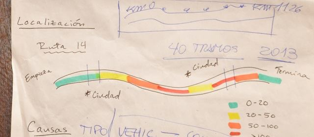

Autovía Ruta 14
El proyecto #AutovíaRuta14 aspira a mejorar la visualización de información referida a los accidentes ocurridos en el corredor vial de la Ruta Nacional 14 que une a la Argentina con sus socios del Mercosur.
Tras ser bautizada como “La ruta de la muerte” por el elevado número de accidentes fatales, las tareas de convertir en Autovía a la red vial no han arrojado cambios sustantivos en la seguridad vial.
Así lo muestra la gráfica que comenzamos a desarrollar a partir del DATAFEST 2014.
La plataforma que aspira a desarrollarse pretende generar visualizaciones interactivas que aporten un mejor insumo para la toma de decisiones. Para ello se pretende visualizar:
- Ubicación de la Ruta 14
- Geolocalización de peajes y accesos a principales ciudades
- Cantidad de accidentes ocurridos en la Autovía de 2010 a la fecha (por año y por mes)
- Comparación con cantidad de accidentes anteriores a la construcción de la Autovia (2006/2013)
- Flujo dinámico del tránsito desde el año 2007 a la fecha.
- “Temperatura” de los sectores de la ruta (en base a cantidad de accidentes ocurridos en cada uno de los 40 tramos de la ruta).
- Cantidad de heridos ( relacionado con: número de accidentes y tipo de vehiculo) x mes
- Cantidad de muertos, heridos por año (relacionado con cant de Accidentes)
- Tipos de accidentes (Frontales, laterales, de atrás, otros) x mes y por año.
- Tipo de vehículo involucrado en accidente (Auto, camión)
- Cruces de datos en que los usuarios puedan crear sus propias visualizaciones (por ejemplo, el cruce entre accidentes, muertes y concentración del tráfico)

Con estas visualizaciones se busca generar una plataforma capaz de mostrar resultados que permitan conocer rápidamente datos tales como:
- zonas de mayor concentración de accidentes
- causas más recurrentes de los accidentes
- hospitales más cercanos
- tramos de mayor concentración de tráfico
- Puntos de interés (acceso a las ciudades, estaciones de servicio, peajes), entre otros.
APLICACIÓN MOBILE para REPORTAR ACCIDENTES
Aplicación Mobile para geolocalizar accidentes (en dos pasos) EN TIEMPO REAL (con lo que se pretende suplir la AUSENCIA de datos oficiales sobre LUGAR del accidente)
- Se está construyendo un sistema de validación por triple reporte de usuarios para que se genere la carga automática del dato
- Permitirá geolocalizar el accidente, dato que hoy debe construirse manualmente
1-APP ACCIDENTE / 2-GEOLOCALIZACIÓN /3-REPORTAR
- Se trabaja en el desarrollo de una APP para Android que permitirá a los periodistas descargarse la aplicación y recibir alertas en sus celulares de los accidentes que ocurran en la Autovía.
- Este mismo sistema de alertas estará disponible para dependencias de Policía, Bomebros y Gendarmería que controlan el corredor vial de la Autovía.
El desarrollo de la App Mobile ya tiene algunos avances en estado Beta a los que se puede acceder en el siguiente link:
https://github.com/josemg08/Prevention14